Autotrader allows you to run multiple algos and multiple instances of each algo from within a single widget. Users who run large numbers of algo instances simultaneously should check the Algo Server limitations.
Opening an algo and adding algo instances
To set up and launch an algo in Autotrader:
-
Do either of the following:
-
To open an algo in a new Autotrader widget, from the Widgets menu, select Autotrader.
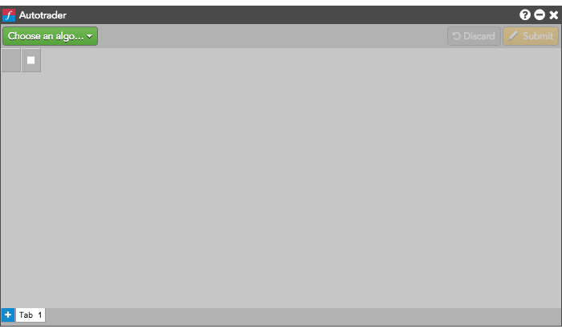
-
To add an algo to an existing Autotrader widget, click + to open a new tab.
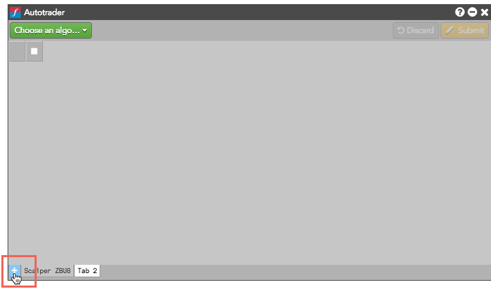
-
Click Pick Algo, and select the desired algo from the list of deployed algos.
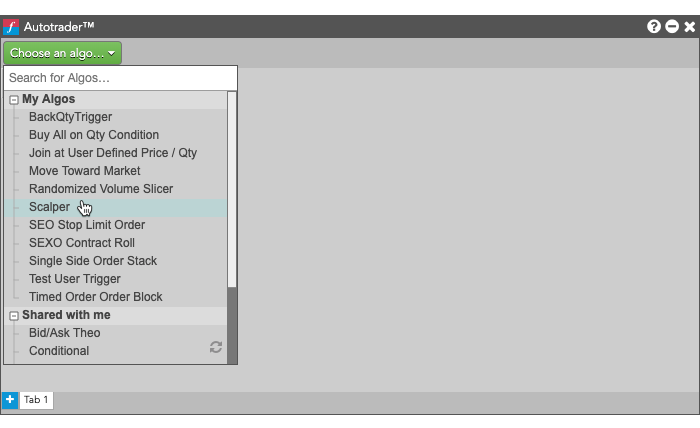
Note: The list includes only ADL algos and Order Ticket Algos (OTAs) you have permission to run.
A new Autotrader widget for the selected algo is opened, seeded with the algo name. The columns vary based on the inputs and variables defined as part of the algo. The green columns indicate user-defined (algo input) variables in the algo itself. Any exported (algo output) variables will appear as orange columns in Autotrader.
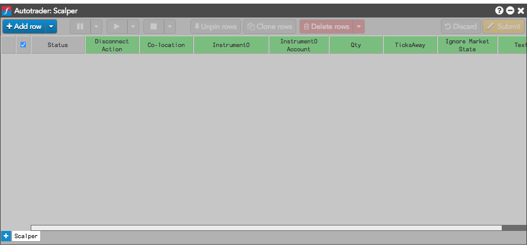
-
Click Add row to add one instance of the algo.
Each row represents an algo instance. Note that creating a row does not start the algo—each row must be launched for the corresponding algo instance to become active.
Configuring and starting algo instances
After you open an algo in Autotrader, you can create several instances of the algo that let you reuse an algo with different sets of parameters. For example, you could open a market-making algo and use different instances to run the algo in different markets.
To configure and start a single algo instance:
-
Open an algo, if necessary.
-
Click to add an instance of the algo.
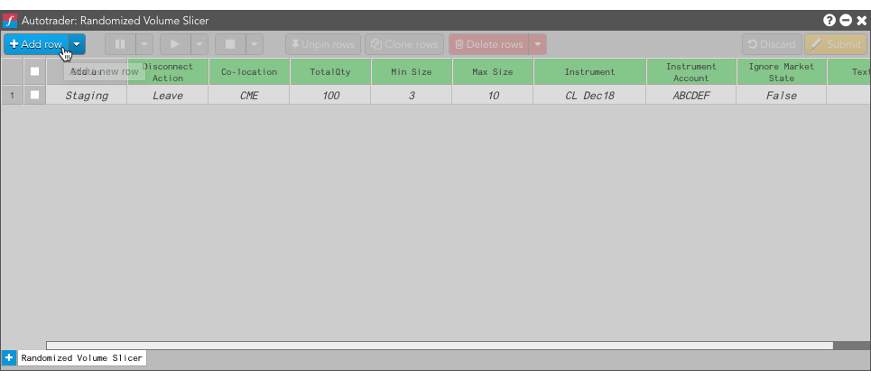
-
Click each cell whose value you want to change and specify the desired value.
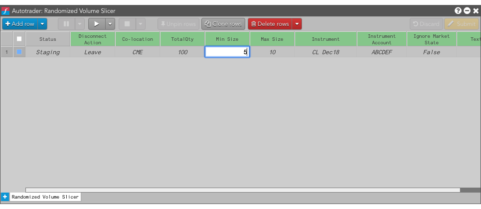
-
Select the algo instance by clicking its check box.
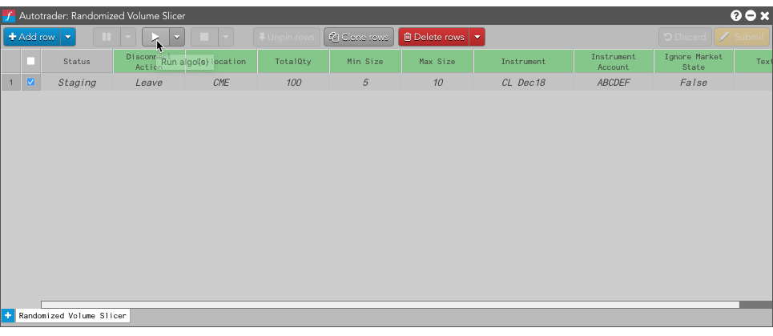
-
Click .
The algo instance Status changes to Starting...
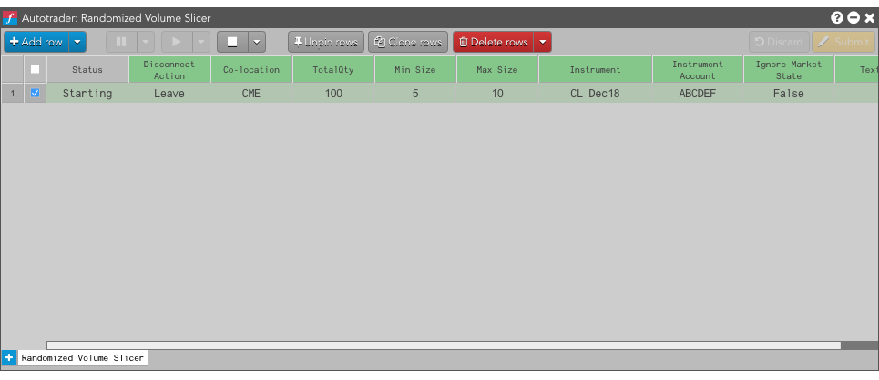
...and then progresses to the next status (Running, in this case).
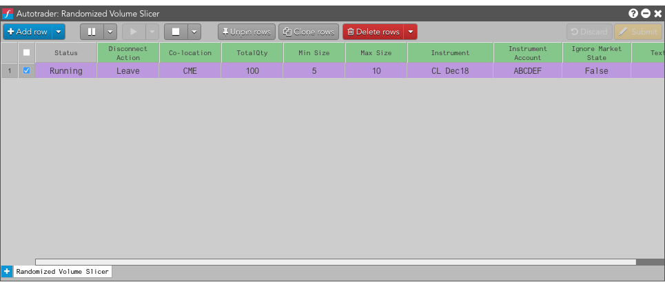
To configure and start multiple algo instances:
-
Open an algo, if necessary.
-
Click to add the desired number of algo instances.
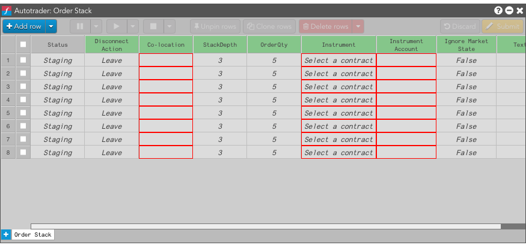
-
Do any of the following:
-
Click each cell whose value you want to change and specify the desired value.
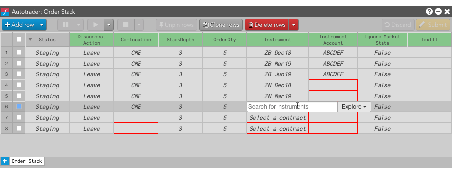
-
Select consecutive cells in a column or row and change the value of the the last selected cell to use the same value for all of the selected cells.
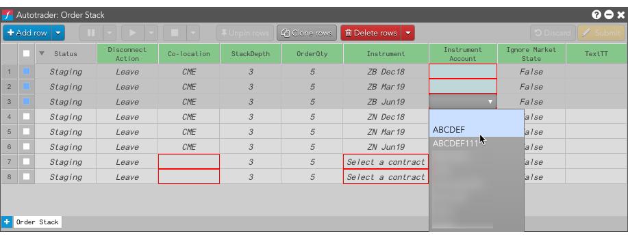
The new value is applied to all selected cells in the column.

-
Select a region of cells to change the values of all cells in the region to the same value.

The new is applied to all selected cells.
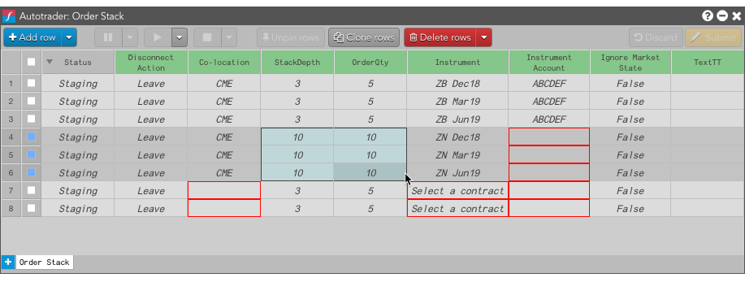
-
Select the algos you want to start; then click
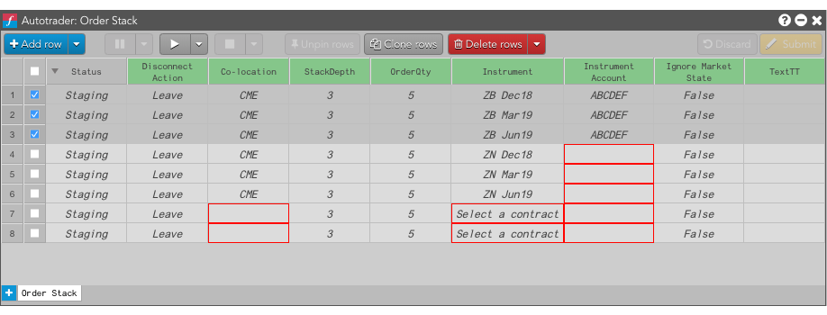
The the Status of all of the selected algo instances changes to Starting and then progresses to the next status.
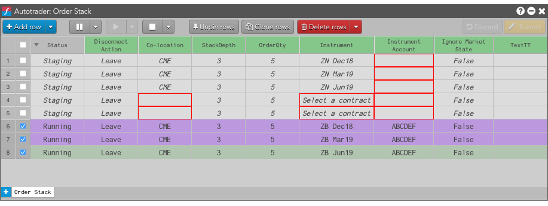
Configuring your algos with data from Microsoft Excel
After you open an algo in Autotrader, you can create several instances of the algo that let you reuse an algo with different sets of parameters. For example, you could open a market-making algo and use different instances to run the algo in different markets.
To configure and start algo instances:
-
Enter the algo input variables for the instances you want to launch.
You can manually click each cell and specify a value, or you can use data you have stored in an Excel spreadsheet. The remainder of the steps assume you have the data stored in an open Excel spreadsheet.
-
Modify or create your Excel spreadsheet.
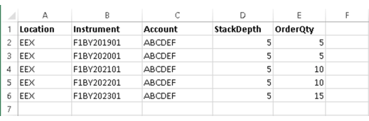
-
In the Excel spreadsheet, select the values you want to seed in the algo instances in Autotrader and copy them.
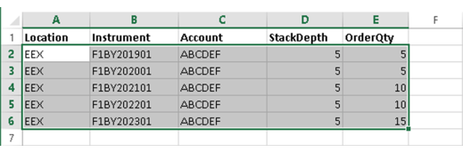
When you copy and paste the values from Excel, the values are static and not linked dynamically. You can also link the values from Excel so that they update in Autotrader if you change them in Excel.
-
In the Autotrader grid, select the cells corresponding to those you copied from Excel.
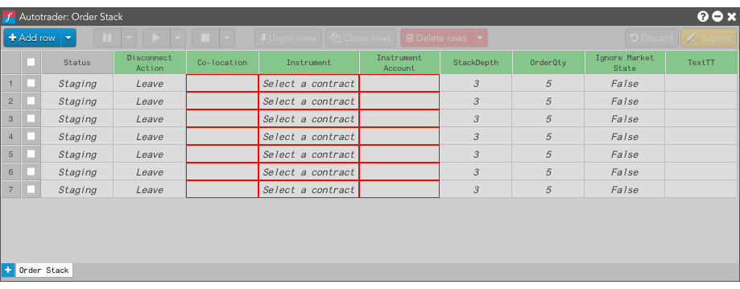
-
Paste the values by typing Ctrl-V.
The corresponding cells update with the copied values.
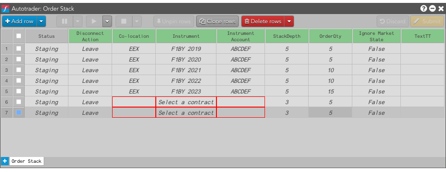
The new variable values appear in each row of the algo in Autotrader. Note that the algos are not yet launched.
-
Select the algo instances you want to launch, and click
 .
You can launch an instance by clicking the launch button associated with the instance, or you can select the the checkbox for one or more instances and click the launch button in the toolbar.
.
You can launch an instance by clicking the launch button associated with the instance, or you can select the the checkbox for one or more instances and click the launch button in the toolbar.
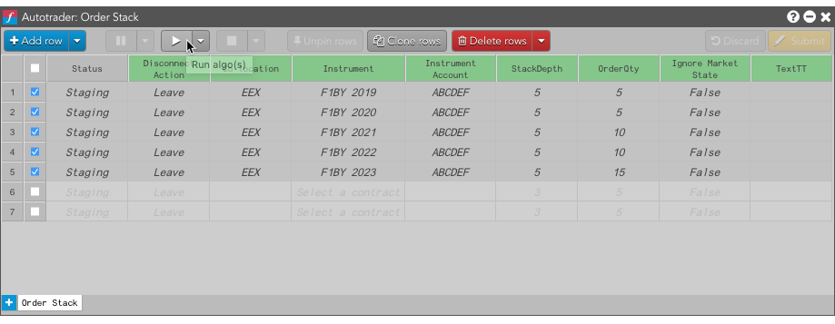
The selected algos' Status changes to Starting as the algo instances are launched.
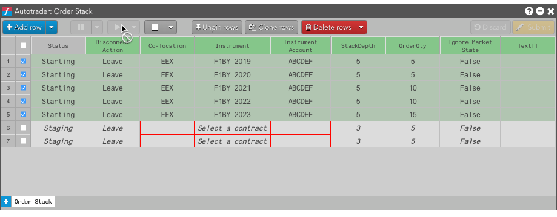
After the algos launch successfully, the Status field changes to Working.